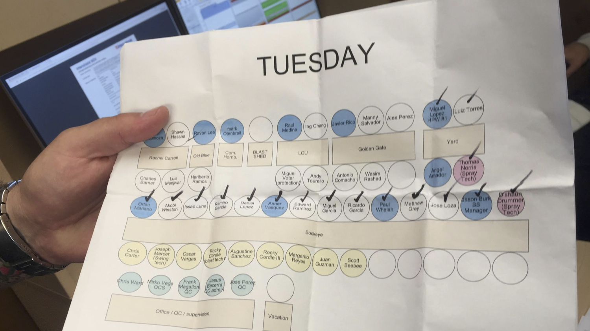

Sonim in the Shipyard
For our corporate Sonim project, our group chose to study shipyard workers.
Enthnographic Research
During our observations, one of the first people we met was Mark, who referred to himself as the “last true apprenticed shipwright”. When he talked about boatyards, his rhetoric was rich with historical details of the ships and the work, and he tended to describe things based on when and where they were created. He proudly showed us his tool collection, many of which were 100 years old, each with its own story. Mark told us with sad eyes, “It’s disappointing...times aren’t how they used to be. You just can’t get the same quality of work with power tools, especially on wooden ships...We (at this shipyard) still use minimal power tools. And you don’t see any screens do you?” He also later told us, “(my job) has nothing to do with fiberglass!” (a modern ship-building material). Mark’s depiction on shipyard work made it seem like a historical craft that he carries on. We defined Mark’s frame as a “traditional frame” to shipyard work, and this frame was shared by many other workers we spoke with, including Melanie, Rob, Graham and Inka.
After meeting our first few workers we thought we had a good idea of who shipyard workers were... until we discovered that there was an entirely different type of shipyard worker, with a completely distinct frame.
When we walked into meet Thomas, we were immediately given a packet of information, a brochure of safety procedures and a map of the different departments. Thomas, who worked in a department called “production support”, began to tell us about how this department had started only a few years ago simply for the purpose of making things well-oiled and efficient. He proudly told us about how his team came in at 4 or 5am to set up everything, prepping equipment for the other teams. He felt accomplished when clients could see them working on a boat within 10 minutes of it being rolled in. He showed us their new equipment scanning system, which kept track of what equipment they had and which projects it was being used in. He showed us the spray painted grids on asphalt, so everything had a place. He even said, “We’ve saved countless hours and thousands of dollars with these advancements. This has gotten me and some of my teammates promoted. I’m doing better than I ever thought I could”.
Thomas’s focus on innovation and forward thinking was shared by many others. We heard things like, “We try to beat our records. The client gives us 2 days, we do it in one!”, from Chris, and, “Our measurement systems are all computerized now!” from Jeff.
Analysis
From these observations and some analysis, we discovered the second group: those with the Innovation Framework. From here we assumed we simply had a dichotomy of two different groups, the Traditional Frame and the Innovation Frame...until we dug a little deeper.
One day we were walking around the shipyard with Chris, who we saw as a hardcore member of the innovation frame mindset. He was checking the progress of painting jobs, and suddenly whipped out a sheet from his back pocket. Intrigued, we asked what it was. Chris explained with a laugh that he used a Wedding Planning software to map out who is working on what boat, with the tables representing boats and the seats representing who is working on what project. He prints out one of these every day to know where his team is, and checks off with a sharpie once he has checked in with each person.
We were intrigued -- why would such a high tech & innovative team still use printouts for things that could be easily and effectively digitized?
After some deeper thought, we started seeing many more examples of this phenomenon. We saw physical binders designated to each project, with printed-out documents with the codes for work that needed to be done, and schedules. They had printed excel spreadsheets for each day’s specific tasks, using them more as checklists than for their intended function. We also realized that the high-tech shipyard gave us a printed out safety procedure with their policies.

This led us to our finding: Shipyard workers fall into 2 categories: those with a traditional frame, and those with an innovation frame. Despite their focus on technology and efficiency, those with the innovative frame still use planning methods consistent with a traditional frame.
We asked, “WHY?” and after lots of brainstorming and thought, we arrived at our insight.
To shipyard workers, something isn’t REAL unless it’s physical and tangible. Once it’s real it has value. Tangible → real → value
We realized that this lined up with some other things we had heard. According to a worker named Sal, “the best part of working [in a shipyard] is getting to see REAL things happen. My wife works in finance, nothing real happens there!”
This insight was intriguing to us. We decided that the best way to approach finding the shipyard workers’ needs was to focus on one person, so zoomed in on Chris, the wedding planner-sheet guy. He also was the head of the paint department. We listed out his activity-level needs that he had every day. One was spending time working on tangible tasks, such as checking off the workers in his wedding planning sheet. He also needed to see tangible evidence of work, communicate changes to the plans as he goes, and delegate tasks. We laddered up and down, asking WHY and HOW, to come up with the following needs hierarchy.
We decided to work down from our four needs, and figure out what our design principles needed to be to meet these needs. We did this visually with post-its on whiteboard, but above is the general concept.
Solutions
From these principles, we developed a three-pronged solution for Sonim. Sonim plan, sonim execute, sonim present. Our first solution, sonim plan, is as easy as drag and drop. Using the platform, managers can physically drag workers to projects. Instead of wasting time typing names or trying to remember who was where yesterday, this platform does all the hard work and managers need only assign workers, without the hassle. The “Progress View” also allows managers to gain an understanding of progress and see more specific assignments at a glance. This solution provides Chris a faster, easier, more up-to-date way of keeping track and assigning his workers.
Secondly, sonim execute not only allows workers to make progress, but see it. The effortless app gives workers the chance to upload photos of their finished tasks in order to confirm completion. Workers can browse the gallery of photos from projects around the yard and be appreciated for their tangible contributions to the boats. Worker are proud that they are a part of making “real things happen” so they should be able to share pride.
Finally, sonim present is the adaptable tool for adaptable work. This last solution is a projector integrated into the sonim phone. Managers will now have a tangible version of their work that everyone can see just by pulling out their sonim phone. By creating a tool that works on the go, communicating changes is no longer a sticking point no matter where they are. Chris doesn’t need to be in his office, away from his workers when viewing or changing his daily plan, he can be out in the field interacting with the people he manages.
Sonim is built for life, but sonim plan, execute, and present are built for the people that live that life.